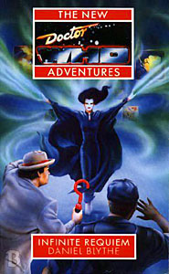

|
Infinite Requiem
|
BASIC PLOT DOCTOR COMPANIONS MATERIALISATION CIRCUIT By page 90, in Banksburgh, 2387 AD. Pg 137 It's back in the city in 1997 by this point, having been summoned by Stattenheim remote control. Pg 161 Atop a rocky outcrop above Banksburgh, back in 2387 AD. Pg 196 The TARDIS dematerializes, then rematerializes immediately adjacent to its own position in order to pick up the Phracton Commandant, who can't fit through the doors, then demateralizes again. Pg 203 The TARDIS arrives on Grove Walkway, in the Pridka Dream Centre, billions of years in the future, whereupon it promptly gets a parking ticket, which, it would appear, the Doctor does not pay. Pg 265 Back in Banksburgh again. Pg 271 In space above Banksburgh, near the Phoenix. PREPARATORY READING Elements of this story reappear from The Dimension Riders. CONTINUITY REFERENCES Pg 7 "He nodded to Veronique Hagen, from the Guild of Adjudicators." The Adjudicators first appeared in Colony in Space and, obviously, Chris and Roz would later be drawn from their ranks. "And yet one colonial incident after another has reared its ugly head since the Cyberwars - well, since much earlier than that, I don't doubt." It's unclear which Cyberwars are being referred to here, since the Cyberwars that we know of are generally accepted to have occurred in the twenty-sixth century (this was a common error in the NAs). Similarly, the colonial incidents that we know of (such as that in The Mutants, amongst others) all happened long after the dating of 2387 that we have here. We must therefore assume that there is another sequence of Cyberwars about which we are unfamiliar, and that the 'colonial incidents' referred to are actually part of the expansion of the Earth Empire, and the problem with settling and holding planets, rather than the ones so often visited by the Third Doctor which tended to be about its contraction. The terms 'Krau' and 'Trau' as a substitution for 'Ms' and 'Mr' respectively first appear on this page and recur throughout the novel. It originally comes from The Caves of Androzani. Pgs 7-8 ""I have seen the holovids of the famine on Tenos Beta. And of the storms in the Magellani system." Tenos Beta is new, but it's possible the Magellani systems is a reference to the Magellanic Clouds (mentioned in The Ribos Operation). Pg 8 "The streets, laid out in the Wheel of Life pattern typical of many colonial outposts, were burning." I'm not entirely sure, but the Wheel of Life pattern (presumably not unlike a flat Minas Tirith) may have been the set-up on Heaven in Love and War. Pg 10 "It called to her like the vastness between worlds, like the calm on Heaven before the deaths." Love and War. Pg 11 "With Ace's departure had come an onerous feeling of responsibility." Set Piece. This is also (although it couldn't have been known at the time) the beginning of the gradual promotion of Benny from second companion to first to lead character in her own right. (Note that Ace's recent departure is frequently referenced, and I have not noted every occasion.) Pg 12 "If the TARDIS, linked to its owner by symbiotic nuclei, reacted, it was maybe like a flash of knowledge in such a dream." Symbiotic nuclei are mentioned in The Two Doctors. Pg 15 "In the six years since transferring from the Icarus - shortly after that business with the Time Soldiers and the death of his commander." The Dimension Riders. Pg 24 The holographic Doctor is wearing the Doctor's clothes from Season 26 and the early NAs. "'Tertiary console room,' he said to her. 'Come and find me.' The image started to dissolve. Benny spread her hands. 'I can't remember -' 'How to get there? No, of course, you weren't there when I last used it.'" It first appeared in Nightshade (although it's odd that Benny says 'I can't remember', implying that she has been there, rather than the more likely 'I've never been there', given what the Doctor says next - presumably she went exploring ages ago). Pgs 26-27 "His face was even more deeply lined now, his tousled brown hair was tinged with grey, and despite several weeks of quiet meditation he still felt drained from his last adventure." Set Piece where, indeed, the Doctor had been put through the wringer. Pg 27 "Ace had gone. That much was certain. It was unlikely that he would ever see her again." Which is of course true, unless you count the times in the epilogue of Set Piece, as well as the events of Head Games, Happy Endings and Lungbarrow. But, to be fair, the Doctor didn't know that at the time. "The recent wound in his shoulder had not entirely healed." He gained this in Set Piece, in an attempt to have the mythological Doctor gain, Odin-like, a mythological wound. It's mentioned often in this book, and I do not record every mention. "The cycle of events that had brought him into conflict with the Monk again." The Alternate Universe arc, Blood Heat to No Future. "Maybe she had come closer than any of them to working it out, the sad and haunting truth that the Time Lord had worn ever since Susan left: that he was afraid of dying alone." The Dalek Invasion of Earth, and with some resonance to the new series School Reunion, albeit with a different emphasis. Pg 32 "The Doctor, standing by the TARDIS, sniffed the air. Fossil fuels: always one of the first smells he noticed on late twentieth-century Earth." Mentioned a number of times, but it particularly reminded me of the bit in The Daleks' Master Plan at the end of Episode 6 when, arriving in Liverpool, the Doctor announces that the air outside (the smog) is toxic. "The Doctor checked his temporal disruption monitor. It had come in useful in London in 1976." No Future. Pg 33 "The Doctor strode into the main console room of the TARDIS, put his hat down on the time rotor [...]" He did this in Iceberg too. I only mention it because it was the behaviour of the David Banks incarnation (he was understudy) in the Doctor Who stage play. Pg 39 Argolis Avenue is named for the location of The Leisure Hive. Pg 44 Mention of Daleks and Cybermen. Pg 46 "The soil of Gadrell Major did not belong to the Phractons, he reminded the Secondary; they merely needed the porizium for the ailing members of their race." Porizium is a cure for a plague, in much the way parrinium is in Death to the Daleks. Pg 48 "'Just us again,' said Bernice eventually. 'Kind of funny, isn't it?'" The 'again' refers to the time Benny and the Doctor travelled together without Ace, just after they'd first met, in Transit, The Highest Science and The Pit. There follows another reference to Ace having just left. Pg 50 "He was sure that the chap had shown him some kind of identification, but he could not actually remember what it had been." It's possible that the Doctor used psychic paper (The End of the World et al). Pg 56 "There was one time he'd had that Harold Chorley bloke from the BBC." Harold Chorley was the annoying reporter in The Web of Fear. Pg 63 "'Help me get her on to the - the -' He waved almost absently at the sofa." This is quite bizarre: the Doctor appears not to know what a sofa is. Maybe he's never hidden behind one. Pg 70 "When someone's ahead of you, her friend Clive on Heaven used to say, at least you can see which way to go." Clive Aubrey appears in the Prelude to Love and War, published in DWM. Pg 71 "Benny instinctively went for the nearest defensive weapon to hand on the wall behind her. It happened to be a large and heavy non-stick frying pan. She looked uncertainly at it for a second, her hand wavering, an unpleasant memory coming back, before letting it clatter to the floor." The Left-Handed Hummingbird, in which Bernice bludgeoned someone to death with a frying pan. Pg 72 "I want you to go to the planet Gadrell Major in UCD 2387" It's not clear what UCD stands for. We may assume 'Universal Calendar Date', perhaps. Pg 77 "'Stattenheim remote-control for the TARDIS,' he explained. 'Been broken for a long while, but I repaired it recently.' He grinned sheepishly at her. 'After that time I had to get back to you in San Francisco, I thought I could do with a quicker method of recalling her.'" The Stattenheim remote-control first appeared in The Two Doctors (but see Continuity Cock-Ups). The San Francisco reference is to the conclusion of All-Consuming Fire. Pg 78 "They had even put the Doctor on trial for it twice, but were not averse to using him as an intergalactic troubleshooter whenever they did not want to get their hands dirty." Need I say The War Games and The Trial of a Time Lord? Thought not. There are loads of examples when the Time Lords send the Doctor on missions, notably Season 6b, The Curse of Peladon, The Mutants, The Brain of Morbius and so on. Pg 85 Reference to Monoids (The Ark) and Rills (Galaxy 4). This helps to date Galaxy Four as being in the very, very far future. AHistory was unable to provide a date for it. Pg 86 Brief mention of the Morestrans, from Planet of Evil and Zeta Major. Pg 88 "Alone, I came first to a battlefield, littered with broken bodies in which blood stiffened the land, in which footprints had been made in rotting flesh, where metal and limbs decayed together under two relentless suns." Uncertain reference. Pg 111 Reference to Romulus Terrin, from The Dimension Riders, as well as the Dalek War (post-The Dalek Invasion of Earth) and the aforementioned Cyberwars. Pg 114 "'Poker?' said Cheynor, straightening up. He wore a hint of an exhausted smile. 'I'm playing snap.'" This is a (quite nice) reworking of the sequence in Battlefield. Pg 115 "[Benny] wondered how long it would take her to relearn the art of scavenging." Reference to her time living outside the Academy as mentioned in Love and War. Pg 127 "After she had recognized the face of Darius Cheynor - really only a fleeting acquaintance from over a year ago during the business with the Garvond." The Dimension Riders again. Pg 131 "The clock on the wall above the lift had dribbled down almost to the floor, where it solidified." Like The Edge of Destruction as well as numerous paintings by Salvador Dali. Pg 137 "The Doctor stood at the main console of the TARDIS. The light in the room seemed somehow dimmer than usual. He thought briefly of all the transient lives who had passed through there, and of those who had died in this very room - some of his own previous selves among them." The dimmer light is reminiscent of Battlefield. As we all know, Doctors One, Five and Six died in the console room. Pgs 137-138 "He had borrowed a baggy, white shirt from the TARDIS wardrobe room - one of the Doctor's old ones, in fact, with tiny symbols, similar to question marks, embroidered on the collar - along with the trousers from a dinner suit which the Doctor vaguely knew he ought to recognize." This is the late Fourth/Fifth Doctor's shirt, although why the symbols, which are clearly question marks, are described as being 'similar to question marks' is unclear. Possibly it's because one of them is reversed, or perhaps Blythe intended to imply that there was something deeper to the question-mark motif than appeared onscreen (perhaps they mean something different in Gallifreyan). The reference to dinner suit trousers is likely an indication than the trousers are those of the third Doctor, by virtue of the fact that Jon Pertwee first autobiography was titled "Moon Boots and Dinner Suits". Pg 140 "You confronted much of it, some time ago, when an entity called the Timewyrm made you enter your own mind." Timewyrm: Revelation. Pg 141 "'Time Lord philosophy.' The Sensopath was haughtily dismissive. 'If you like,' the Doctor shrugged. 'I only got a double gamma for that at the Academy.'" The Doctor only got a double gamma in general, according to The Ribos Operation. Behind a roundel, in a cupboard, we find "a cascade of electronic components [and] a couple of fishing floats and a leather-bound book called Black Orchid" The fishing floats from The Two Doctors and the book from Black Orchid, perhaps unsurprisingly. Pg 142 "It's a very basic thought wave damping device. I wish I'd had this when I met the Vardans." No Future, and see Continuity Cock-Ups. Pg 149 "You remind me of someone I used to know. A friend of mine, and the Doctor's. She used to prefer a name of her own. But she took her real name back eventually." Benny, obviously, is referring to Ace and the latter's moment of self-revelation and acceptance in Set Piece. Pg 151 "Exploits? Oh, yes. The time-space visualiser carries records of them all." The time-space visualiser goes all the way back to The Chase, but this is the first time it's implied that it's got a record of all of the Doctor's adventures as well as its main purpose to look anywhere in time and space. You can just imagine the Doctor and Benny sitting down with a bottle of wine to watch The Horns of Nimon, can't you? And on the subject of the visualiser: "Are you aware that there are gaps in the earliest data? 'Ah, well,' the Doctor shrugged. 'I did wonder.'" This implies that the earliest trips that the Doctor made in the TARDIS, in Lungbarrow amongst others, have been removed from the memory of the visualiser. It's not clear by whom, although the Doctor claims to suspect the Time Lords. In fact, it remains more than possible that its hard drive has been tampered with and altered numerous times, by either the Time Lords or the Doctor or both. More prosaically though, this is probably just an in-joke to the fact that some of the early episodes no longer exist. "And furthermore, continued the silky voice, back inside his head, one of your favourite ploys is to pretend to be far less intelligent than you are." The Dominators is one of the most obvious examples. "In the early days of your current body, I observed, you affected a kind of whimsical idiocy, in order to mask your darker side." Oh, that's what it was. And I thought he was just being stupid. Time and Rani et al. "'I don't have a darker side,' he attested, but without much conviction. 'It was all a fabrication of the Matrix.'" This would appear to be a reference to The Trial of a Time Lord, episodes 5-8 (Mindwarp), but the Doctor appears to be clutching at straws here somewhat. Pg 154 "Our race could have abandoned physical form, but we chose not to. There are certain... pleasures... which a purely spiritual essence does not afford." The origins of the Sensopaths is almost identical to the history of the elven race in the rather marvellous comic series, Elfquest. Pgs 154-155 "How can a being be incompatible with its own self? 'Don't know. Ridiculous idea,' said the Doctor, a little guiltily. An observer might have seen him dart the briefest of glances at the TARDIS console - almost the kind of a look a human would give to a friend to say 'Stay out of this, you.'" This is strangely phrased, given that there clearly is an observer (it's Kelzen), but nonetheless refers either to the Doctor and TARDIS's patch of trouble in the early NAs (Witch Mark and Deceit being the two major reference points here) or perhaps to the fact that the TARDIS knows how well the various Doctors don't get on, as evidenced in The Three Doctors, The Five Doctors and The Two Doctors. Pg 156 "And when the time comes for the music of the Infinite Requiem, you will hardly notice or care anyway." The title of the book appears, but, it has to be said, I've still no idea why that is the title, or indeed why the process that is later described is called what it is, other than the fact that it sounds cool. Pg 161 "The alien seemed to have appropriated another of the Doctor's old items of clothing: the electric-blue cloak of mourning which he had worn on his visit to Necros." Revelation of the Daleks. Pg 162 "I'm not running auditions for companions here. You'll be falling over and spraining your ankle next." Far too many examples to mention here. Pgs 162-163 "I'd heard this was hardly the centre of the sartorial industry. Kolpasha's the place for that, I think you'll find." Kolpasha is mentioned variously in the books, but was visited by the Fourth Doctor and Romana in the comic strip Victims. Pg 167 "Bernice looked confused. 'I thought the Zero Room had been jettisoned ages ago?' 'It was,' said the Doctor, with a mischievous look in his eye. 'But that was before I got my old TARDIS back from the Silurian Earth - remember?'" The Zero Room was jettisoned in Castrovalva (and again in Deceit), but, as the Doctor states, this is the old TARDIS from the Alternate Earth of Blood Heat. It's hard to see why Bernice is confused though, since she was there in Blood Heat, and knows that this is an older version of the TARDIS. It's also hard to see why Bernice phrases the above statement as a question, since it's clearly not one. Pgs 172-173 "The Sontaran whose head had deflated like a balloon when she blew his probic vent open on Titan." It's not clear when this happened, but both method of dispatch of Sontarans and net deflating result are consistent with what we have seen. See The Time Warrior and The Sontaran Experiment. Pg 173 Reference to Caxtarids, seen in Return of the Living Dad and The Room With No Doors, and probably Blue Box. Pg 175 "He did not dare to meet those terrible eyes." This is just a dreadful line. "The Doctor closed his eyes and began to picture, one by one, the companions he had gained and lost. He was remembering it had worked with the Haemovores." The Curse of Fenric, although in this case he's working on keeping someone out of his mind, rather than proclaiming a demonstration of faith. Pg 179 "'Well, you can call me the Doctor. Most people do. I've also been known as Ka Faraq Gatri, Theta Sigma, Merlin, one you'd never be able to pronounce, and, er -' he smiled fondly, '-nanoceph.'" Ka Faraq Gatri, oft-quoted in the NAs, originates in the novelisation of Remembrance of the Daleks. Theta Sigma is from The Armageddon Factor and, amongst others, Divided Loyalties. Merlin is from Battlefield. The unpronounceable name is long-established Who fact, although it has often proved difficult to establish exactly where said fact began to be accepted as fact. Nanoceph is a phrase that Ace used at times. The Doctor clearly states that he's on his Seventh body. Pg 185 "'Clear as Draconian chess, Doctor,' said Liebniz." Frontier in Space, but see Continuity Cock-Ups. Pg 193 "[The Doctor] was making delicate adjustments with a laseron probe." As in other NAs, this device presumably bears little or no relation to the laserson probe mentioned in The Robots of Death. Pg 196 "Cheynor had been looking the blue box up and down with some apprehension. 'I saw this thing arrive once,' he said." The Dimension Riders again. Pg 197 "'Actually, no,' said the Doctor. 'I started to tire of chess a while ago. These days, I seem to be playing hopscotch.'" Reference to the Doctor's manipulation of others in Season 26 and the earlier NAs, and how it appears to be wearing off a little bit now. "'You advocate this "mercy". Having the power and not using it.' 'Quite. I did so with the Key to Time.'" The Armageddon Factor. Pg 205 "'You'd never understand, anyway, Brigadier,' the Doctor muttered absently." The Doctor mistaking a member of the military for the Brigadier is clearly similar to a scene in Remembrance of the Daleks. "Are you familiar with the Venusian lullaby "Klokleda partha menin klatch"?" We see this almost every other book in the NAs and it's beginning to wear a little thin. It's originally from The Curse of Peladon. Pg 209 "He gestured towards the scanner, which showed a constant image of the blue-cloaked Kelzen, bobbing on air in the Zero Room." The Doctor could levitate in the Zero Room in Castrovalva, but here it's not clear whether it's a function of the room, or whether Kelzen's just doing it him/herself. Pg 225 "There were times when it would have been very useful for you to be in two places at once. Like when I was left in India. And on the Vampires' planet." All-Consuming Fire, Blood Harvest. "She remembered the time that an all too convincing virtuality of Heaven, her home-world, had been set up inside the TARDIS." Heaven is from Love and War, and the virtual version of it in the TARDIS was seen in No Future. But see Continuity Cock-Ups. Pg 238 "The signal had come an instant later. It had taken the form of the h-Doctor in 25th-century battle dress, brandishing his umbrella and reciting a famous speech from Osterling's The Good Soldier." Theatre of War. This actually fits quite well, as Osterling's play is said to have been published in 2273 (in Theatre of War), so the speech may well still have been famous only a little over a hundred years later. Pg 241 "'I didn't get where I am today,' he muttered, 'by being sensible and safe.'" This is a misquote from the seminal British comedy The Fall and Rise of Reginald Perrin (the eponymous character who, I now realize, may well have informed the name of Captain Romulus Terrin from The Dimension Riders). Pg 244 Mention of Sarah Jane Smith. Pg 249 "Suzi swallowed. 'Don't push him too far, Doctor -' 'It's all right,' he whispered. 'I know what I'm doing.'" This is almost identical to the scene of Davros-baiting in Remembrance of the Daleks. Pg 256 "'The thing about opening up a mind-channel,' he said, 'is that it's like a catflap.'" Possibly co-incidence, but Catflap was the working title of Survival. This is quite similar to something we see in The Girl in the Fireplace. Pg 262 "The princess lived happily ever after and everyone went up the wooden stairs to Bedfordshire." Again, possibly co-incidence, but this is a misquote from Ghost Light (and on that occasion it was also deliberately misquoted from a children's story). "I've fought the Daleks, the Cybermen and Sutekh the Destroyer. I've made a bargain with a creature of anti-matter, visited universes like parodies of this one." The Daleks et al; The Tenth Planet et al; Pyramids of Mars; Planet of Evil and Zeta Major. Finally, Inferno and Blood Heat, amongst others, are the most striking examples of the last in the Doctor's little list. Pg 266 "She thought of the burning rooftops of Paris, which she had watched not that long ago." Set Piece. "It's a colonial tradition, going back to the Mars days." We saw the early Mars colonies in Transit, but probably the longest time we spend there will be in Fear Itself. Pg 270 "'So,' she said, 'back in the main console room, then?' 'Yes. The others do have their uses, though. I expect we'll need them again.'" In fact, they start the next novel, Sanctuary, back in the Tertiary Console Room. Pg 274 After the Doctor thinks Shanstra is gone for good, Liebniz writes "Something is not quite right in my head, I know that much. My blessing is a curse, it always has been, but this time it is more as if... something is there. Watching." It's one of those X-Files-style cliffhanger endings and, as such, is actually quite annoying. OLD FRIENDS AND OLD ENEMIES NEW FRIENDS AND NEW ENEMIES Horst Liebniz, a senior officer on the Phoenix, and Tzidirov, rather more junior; the female General of the Earth Space Corps, who apparently has an enormous brow (Pg 15); Livewire and Trinket, siblings; Adjudicator Hagen; a rather random nutter in Banksburgh. In 1997: Nita Bedi and her Mum; Philip Tarrant (not a nice piece of work); Barry; Terry, a university computer technician; a taxi driver; Sanjay Meswani (who is born in the course of the story); a consultant and a ward sister at the Hospital. In the very distant future: Amarill dell'katit vo'Pridka and various other aliens.
CONTINUITY COCK-UPS PLUGGING THE HOLES [Fan-wank theorizing of how to fix continuity cock-ups] FEATURED ALIEN RACES Phractons - a kind of composite-minded creature, although with each mind being an individual in and of itself. Collectively, they are known as a Swarm. They are part-organic, part-cybernetic, but are separate beings who travel around in highly-armed globes, which fire a combustible gas and then ignite it (rather like the Mechanoids appear to have done). They are individuals and have different levels of morality depending on which one you are experiencing. That said, most of them seem quite vicious and it's a bit of a wonder that the Commandant, given his comparative pacifism, could have risen to be in charge when the rest of them seem to be gun-toting mass murderers. The Pridka, a race of telepathic beings from the far future, with 36 senses. They have a crest of fins which can change colour, while their skin is basically blue. They tend to be either mostly male or mostly female, with aspects of each gender. They have at least four stomachs. The Pridka would appear to be a race with an incredibly low population, as Amarill's surname includes the race name, which is akin to calling me Anthony Wilson Human. Monoids and Rills. Rakkhins, a race of telepaths who need to be constantly immersed in a supersaturated solution of ammonia. The Yzashoks, a race of philosophers who spend their time considering the confluence between the harmony of the self and the communion with others. They exist in an amniotic fluid attuned to their brain patterns. The Borsii, who have tiny bodies and massive wedge-shaped heads. They appear to exist purely to faciliate a joke about the race getting big-headed. FEATURED LOCATIONS Some of the action in the 2387 time-zone takes place on the Phoenix, a Spacefleet vessel commanded by Cheynor. Towards the end of the book, the Darwin also turns up. A city in England, Earth, 1997. For some reason (unless I've missed it) the city is never named, but it feels like either Birmingham or Liverpool to me. It includes a City Hall, a park, a pub called the Four Pennants, a University computer lab (and, by extrapolation, a university), Flat 22 at the Westbrook House flats, and a Hospital. The Pridka Dream Centre, in orbit around Taprid, well beyond standardized Earth dating systems, and, seemingly, millennia after the destruction of the solar system (pg 201), thus well beyond the year 5 billion or so. The Dream Centre contains various areas adapted for different aliens as well as its crowning achievement, the Dreamguide. IN SUMMARY - Anthony Wilson |
|
 |